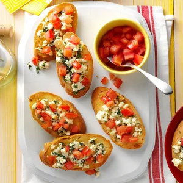
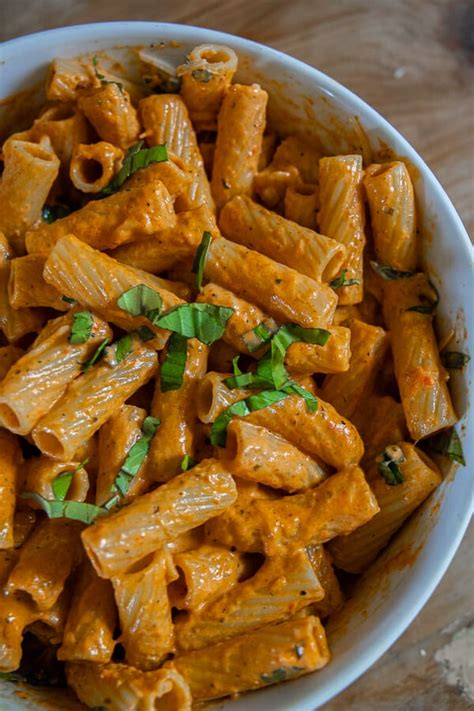
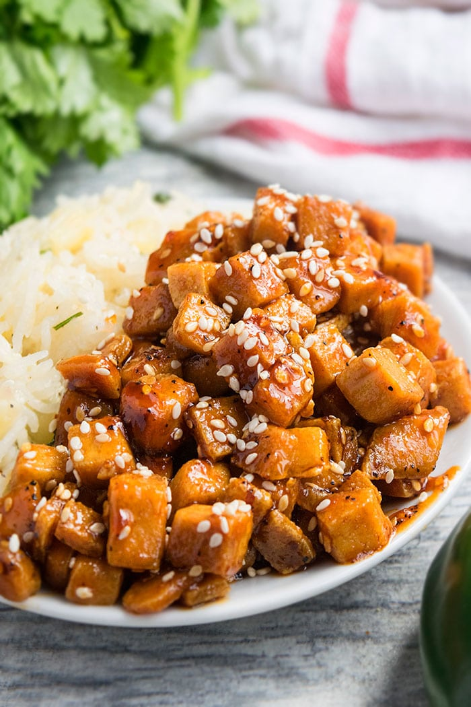

Feta Bruschetta
Src: https://www.tasteofhome.com/recipes/feta-bruschetta/
Ingredients
- 1/4 cup butter, melted
- 1/4 cup olive oil
- 10 slices French bread (1 inch thick)
- 1 package (4 ounces) crumbled feta cheese
- 2 to 3 garlic cloves, minced
- 1 tablespoon minced fresh basil or 1 teaspoon dried basil
- 1 large tomato, seeded and chopped
Instructions
- Preheat oven to 350°. In a small bowl, combine butter and oil; brush onto both sides of bread. Place on a baking sheet. Bake at 350° for 8-10 minutes or until lightly browned on top.
- Combine the feta cheese, garlic and basil; sprinkle over toast. Top with tomato. Bake 8-10 minutes longer or until heated through. Serve warm.

Liv's Favorite: Bell Pepper Pasta
Src: me - I make this for my girlfriend
Ingredients
- 1 cup vodka sauce
- 1 cup dry penne noodles
- 1 tbsp salt
- 1/2 tbsp italian seasoning blend
- 1 bell pepper, diced
- 4 to 6 cups, water
- 1/2 cup ricotta cheese
Instructions
- Pour water into a pot and mix in salt. Begin heating the pot to a boil. While water heats, cook diced pepper at medium-low heat
- After pasta water begins to boil, while pasta is cooking, pour vodka sauce into saucepan with diced bell pepper. Mix italian seasoning blend into sauce
- Combine/finish: After pasta is al dente, combine drained pasta, vodka sauce, and ricotta. Mix until a creammy rose colored sauce forms.

Baked Salmon
https://www.wellplated.com/baked-salmon-in-foil/
Ingredients
- 2 pound side of salmon boneless
- 5 sprigs fresh rosemary
- 2 small lemons
- 2 tablespoons extra virgin olive oil
- 1 teaspoon kosher salt
- ¼ teaspoon ground black pepper
- 4 cloves garlic peeled and roughly chopped
- Additional chopped fresh herbs
Instructions
- Remove the salmon from the refrigerator and let stand at room temperature for 10 minutes while you prepare the other ingredients. Heat oven to 375 degrees F. Line a large baking dish or rimmed baking sheet with a large piece of aluminum foil.
- Lightly coat the foil with baking spay, then arrange 2 sprigs of the rosemary down the middle. Cut one of the lemons into thin slices and arrange half the slices down the middle with the rosemary. Place the salmon on top.
- Drizzle the salmon with the olive oil and sprinkle with the salt and pepper. Rub to coat, then scatter the garlic cloves over the top. Lay the remaining rosemary and lemon slices on top of the salmon. Juice the second lemon, then pour the juice over the top.
- Fold the sides of the aluminum foil up and over the top of the salmon until it is completely enclosed. If your piece of foil is not large enough, place a second piece on top and fold the edges under so that it forms a sealed packet. Leave a little room inside the foil for air to circulate.
- Bake the salmon for 15-20 minutes, until the salmon is almost completely cooked through at the thickest part. The cooking time will vary based on the thickness of your salmon. If your side is thinner (around 1-inch thick) check several minutes early to ensure your salmon does not overcook. If your piece is very thick (1 1/2 inches or more), it may need longer.
- Remove the salmon from the oven and carefully open the foil so that the top of the fish is completely uncovered (be careful of hot steam). Change the oven setting to broil, then return the fish to the oven and broil for 3 minutes, until the top of the salmon and the garlic are slightly golden and the fish is cooked through. Watch the salmon closely as it broils to make sure it doesn’t overcook and the garlic does not burn. Remove the salmon from the oven. If it still appears a bit underdone, you can wrap the foil back over the top and let it rest for a few minutes. Do not let it sit too long—salmon can progress from “not done” to “over done” very quickly. As soon as it flakes easily with a fork, it’s ready.
- To serve, cut the salmon into portions. Sprinkle with additional fresh herbs or top with an extra squeeze of lemon as desired.

Liv's Favorite: Sesame Tofu on Rice
Src: me - I make this for my girlfriend
Ingredients
- 2 tbsp vegetable oil
- 1 block extra firm tofu, pressed for 15-30 minutes
- 1 bell pepper, cut into half strips
- 1 tsp freshly minced garlic
- 4 tbsp soy sauce
- 1bsp sesame seed oil
- pepper to taste
- salt to taste
- 4 tbsp corn starch
- 1 cup white or jasmine rice par boiled or steamed
Instructions
- Cook peppers at medium heat for 5 mins. While peppers cook, finish preparing tofu. To prepare tofu, cut the pressed block into square or rectangle cubes. Fill a shallow bowl or plate with corn starch and roll each piece of tofu in corn starch. Rolling it in corn starch will allow for it to crip up when fried.
- After peppers have cooked for a few minutes, add tofu, minced garlic, salt, pepper, veggie oil, and fry for 10 minutes at medium high-heat until desired texture is achieved, or crisp edges have begun to form.
- Lower the pan temperature to low heat and add soy sauce + seasame seed oil. Added a dash of corn starch may help thicken the sauce.
- Serve on top of cooked white or jasime rice.